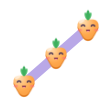
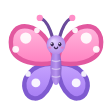

Link three or more
Drag through tomatoes, carrots, corn, sprouts and plums of the same kind, up, down and sideways. The longer the link, the bigger the harvest.
 kawarimi interactive
kawarimi interactive
A cozy puzzle game for Android
Link the friends, grow the farm.
Drag a line through three or more farm friends of the same kind to harvest them. Travel through 380 levels in 19 worlds, from the seasons of the farm to Sugarplum Glade and Firefly Forest, and grow Pip's farm with every star you earn.
Free to play · No account needed · Plays offline


The video plays from YouTube once you press play.

Drag through tomatoes, carrots, corn, sprouts and plums of the same kind, up, down and sideways. The longer the link, the bigger the harvest.

Follow the path from Spring Meadow through summer, autumn and winter to Starlight Village, then on to Sugarplum Glade and Firefly Forest.

Chop weeds, thaw frozen friends, crack eggs, set butterflies free, knock down giant haystacks and let fireflies light up the board.
Every link charges the meter. When it is full, tap the board to clear a whole patch at once, for free.
Every star you earn helps the farm grow, from a little veggie patch to a windmill, a hot air balloon and a rainbow. Then a riverside orchard opens up.
A daily puzzle and a daily gift, the Harvest race against the neighbours, the weekend Harvest Festival and Pip's Winter calendar every December.
Dig out one piece with the Hoe, mix up the field with Shuffle, or fill the Harvest meter at once with Fertilizer.

No timers, so take as long as you like. Colour-blind patterns, plain shapes and a power saver mode. Made for phones and tablets, and it works offline.
Fat-fingered a link? Undo it once per level. Your farm is saved on your phone, with optional cloud save if you sign in with Google.


Starfurrow is free. Ads are optional rewarded videos you only watch when you want extra moves, a booster or coins. Optional purchases are coin packs and a one-time Starter Pack. You do not need an account: your farm is saved on your phone, and you can turn on cloud save with Google if you want it.